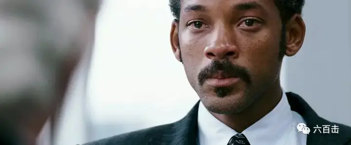
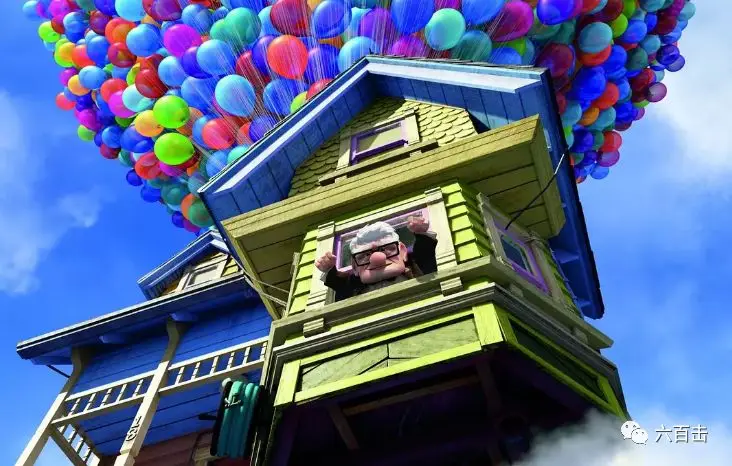
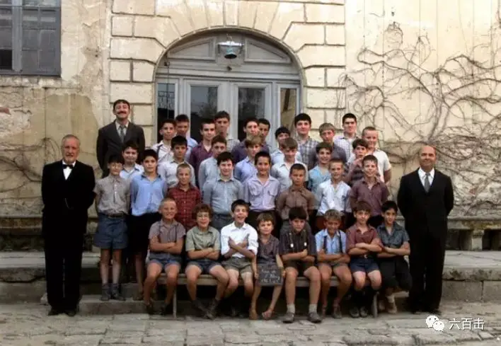
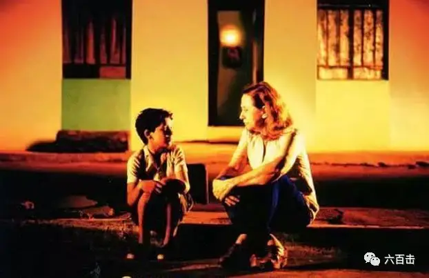
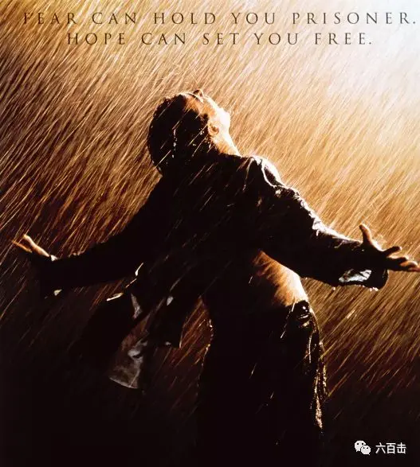

我在追求真实
可真实就是我是个大懒虫
所以很多时候
我很无力
总是拖着疲惫和不堪
进入工作和生活
一个早晨
我顶着不知是疲倦还是睡眠过度的脑袋
晕乎乎地冲入电梯赶去上班
推开门的刹那
一缕阳光照在我的身上
心里顿时有种莫名的感动
那是一种抑压很久被光反射出的希望
所以我有了这个想法
以希望为主题进行一次混剪
我们工作
我们生活
我们哭泣
我们愤怒
我们呼求
我们挣扎
但我们一直在坚持
因为我们心怀希望
有人为了孩子、为了家庭
有人为了自由、为了梦想
更有人为了永恒、为了信仰
黑暗越深
所需要穿透黑暗的渴望和力量就越大
我的混剪
将从个人的迷茫、挣扎和梦想开始
再到面对生死时的恐惧和信念
最后在对终极、永恒的追问中
达到高潮和顶点
有些问题注定没有答案
或许也不需要答案
混剪结束于无声和静默
我们当安静思想
我们最深的渴望和依靠
是否在自己的手中

原创作品《十个破土而出的希望》
10

当幸福来敲门
生活的重担和压力是真真实实的
尤其是对于
我这个人到中年的业务员
金融危机下，我失去了工作
长期的贫穷之下
妻子离开了我
房子离开了我
但是可爱的儿子没有离开我
他是我最大的希望和奋斗的动力
在儿子面前
我要用行动告诉他
如果你有梦想的话
就要去捍卫它
即使我们要风餐露宿
即使我们要在公厕中过夜
但是那份困境中的相依为命
总是让我备受鼓舞
我打零工、我卖血
我和刚毕业的学生
一起竞争一个实习的机会
因为希望还在
我的奋斗就不会停止
9
猜火车
我为什么那么做？
有一百万个答案，但全是错的
原因是我根本就是个坏胚子
但那会改变
我要改变
这是最后一件坏事
我要洗心革面
向前走，选择人生
我已经在期望了
我会跟你一样
工作，家庭，大电视机，洗衣机
汽车，CD播放机，电动开罐器
健康，低胆固醇，牙医保险，贷款
购屋，休闲服，行李箱
三件式的西装
DIY，猜谜节目，垃圾食物，孩子
公园散步，朝九晚五，高尔夫球
洗车，运动衫，阖家过耶诞
养老金，免税，清水沟
只往前看，直到你死掉那天为止
8

飞屋环游记
我是一个有梦想的人
很幸运
我遇到了一个和我有着同样梦想的女孩
我们都梦想去南美找天堂瀑布
可是结婚后
我们一直被生活所累
还没有准备出发
妻子却因病逝世
遗憾和悔恨让我这个72岁的老头
变得更加沉默、乖僻
更让我悲伤的是
政府为了兴建大楼
要将我们的老房子拆除
这一次
梦想和承诺点燃了我的希望和勇气
我要带着房子飞向天空
我要拥抱天堂瀑布
我告诉自己
不论多老
梦想都可以随时起飞
7

放牛班的春天
对于迷途中被遗忘的学生而言
马修老师的出现
是他们最大的希望和幸运
对于一个落魄、过气的艺术家而言
遇到这群可爱的小天使
是马修一生最大的幸福和奇迹
马修用真诚和善良对待每一个学生
学生用童真和美丽感动着马修
于是
一首首感人至深的合唱
在马修的笔下和
学生们的歌喉中诞生
中国到处是迷茫的小天使
但是马修太少
滑动下方区域
查看完整内容
内含片尾被忽视的圣诗
▼
01 Vois sur ton chemin 《眺望你的路途》
Gamins oubliés égarés 孩子们迷了路
Donne leur la main 向他们伸出手
Pour les mener 拉他们一把（？）
Vers d'autres lendemains 步向往后的日子
Sens au coeur de la nuit 黑暗中的方向
L'onde d'espoir 希望之光
Ardeur de la vie 生命中的热忱
Sentier de gloire 荣耀之巷
Bonheurs enfantins 童年的欢乐
Trop vite oubliés effacés 转瞬消逝被遗忘
Une lumière dorée brille sans fin 一道绚烂金光
Tout au bout du chemin 在小道尽头闪亮
Sens au coeur de la nuit 黑暗中的方向
L'onde d'espoir 希望之光
Ardeur de la vie 生命中的热忱
sentier de la gloire 荣耀之巷
02 Caresse sur l'océan 《海上的清风》
(chorus)Caresse sur l'océan 海面上的清风
Porte l'oiseau si léger 托起轻盈的飞鹭
Revenant des terres enneigées 从白雪皑皑的大地飞来
Air éphémère de l'hiver 冬日转瞬即逝的气息
Au loin ton écho s'éloigne 远方你的回声飘离了
Chateaux en Espagne 西班牙的城堡
Vire au vent tournoie déploie tes ailes 在回旋的风中转向 展开你的翅膀
Dans l'aube grise du levant 在灰色晨曦中
Trouve un chemin vers l'arc-en-ciel 寻找通往彩虹的路
Se découvrira le printemps 揭开春之序幕
(solo)Caresse sur l'océan 海面上的清风
Pose l'oiseau si léger 托起轻盈的飞鹭
Sur la pierre d'une (i^)le immergée 停落孤岛的礁岩处
Air éphémère de l'hiver 冬日转瞬即逝的气息
Enfin ton souffle s'éloigne 你的喘息终于远去了
Loin dans les montagnes 融入群山深处
(chorus)Vire au vent tournoie déploie tes ailes 在回旋的风中转向 展开你的翅膀
Dans l'aube grise du levant 在灰色的晨曦中
Trouve un chemin vers l'arc-en-ciel 寻找通往彩虹的路
Se découvrira le printemps 揭开春之序幕
(solo)Calme sur l'océan
03.la nuit 《黑夜》
O^ nuit viens apporter à la terre 哦 黑夜刚刚降临大地
Les calmes enchantements de ton mystère 你那神奇隐秘的宁静的魔力
L'ombre qui t'escorte est si douce 簇拥着的影子多么温柔甜蜜
Si doux est le concert de tes doigts chantant l'espérance 多么温柔是你歌颂希望的音乐寄语
Si grand est ton pouvoir transformant tout en rêve heureux 多么伟大是你把一切化作欢梦的神力
(solo)O^ nuit, O^ laisses encore à la terre 哦，黑夜仍然笼罩大地
Les calmes enchantements de ton mystère 你那神奇隐秘的宁静的魔力
L'ombre qui t'escorte est si douce 簇拥着的影子多么温柔甜蜜
Est-il une beauté aussi belle que le rêve 难道它不比梦想更加美丽
Est-il de vérité plus douce que l'espérance 难道它不比期望更值得希冀
04.Cerf-volant 《风筝》
Volant au vent 空中飞舞的风筝
Ne t'arrête pas 请你别停下
Vers la mer 飞往大海
Haut dans les airs 飘向高空
Un enfant te voit 一个孩子在望着你呐
Voyage insolent 率性的旅行
Troubles enivrants 醉人的回旋
Amours innocentes 纯真的爱啊
Suivent ta voie 循着你的轨迹
En volant 飞翔
Cerf-volant
Volant au vent 空中飞舞的风筝
Ne t'arrête pas 请你别停下
Vers la mer 飞过大海
Haut dans les airs 飘向高空
Un enfant te voit 一个孩子在望着你呐
Et dans la tourmente 在暴风雨中
Tes ailes triomphantes 你高扬着翅膀
N'oublie pas de revenir 别忘了回来
Vers moi 回到我身边
05.Lueur d'été 《夏日的微曦 》
Lueur d'été 夏日的微曦
Rêve animé 驿动的梦
Mon coeur s'enflamme 我的心燃起
Et soudain s'envole 蓦地腾飞
si loin du sol 远离大地
Et les larmes s'effacent 泪水已抹去
Loin des murs 了无痕迹
Je m'abandonne 我沉醉其中
Et tout rayonne 一切在闪耀
Voiles au vent 风中的船帆
Rivages au loin 远方的海岸
C'est le temps de l'été 这是夏天的时刻
Et souvent de liberté 歌颂自由的歌曲
Les nuages effacés 乌云被抹去
Premiers émois 夏天的初月
Frissons de joie 欢乐的震颤
Tout s'anime 一切在跳跃
Tout devient si léger 一切变得明亮
Vivre apaisé
J'oublie la honte et les pleurs
Loin des tourments 荣辱恐惧抛诸脑后
Terreurs d'enfants 孩子们的恐惧
Les tristes murmures 悲伤的呓语
Si loin des murs 了无踪影
Lueur d'été 夏日的微曦
Mon coeur s'enflamme 我的心燃起了
Et soudain s'envole 蓦地腾飞
Si loin du sol 远离大地
Et les larmes s'effacent 泪水已抹去
Loin des murs 了无痕迹
Je m'abandonne 我沉醉其中
Et tout rayonne 一切在闪耀
06 Requiem aeternam dona eis Domine 《 上帝！求你赐给他们永远的安息》
et lux perpetua luceat eis 并以永恒的光辉照耀他们。
Te decet hymnus Deus in Sion, 上帝，你应受到赞颂，
et tibi reddetur votum in Jerusalem. 我要到耶路撒冷向你偿还誓愿。
Exaudi orationem meam, 求你俯听我的祈祷，
ad te omnis caro veniet 凡是血肉之躯都要向你投靠。
Requiem-aeternam dona eis Domine 上帝！求你赐给他们永远的安息，
et lux perpetua luceat eis 并以永恒的光辉照耀他们。
Kyrie, eleison. 上帝，求你垂怜
Christe,eleison. 基督，求你垂怜。
Kyrie, eleison 上帝，求你垂怜。
Requiem aeternam dona eis Domine 上帝！求你赐给他们永远的安息，
et lux perpetua luceat eis 并以永恒的光辉照耀他们。
In memoria aeterna erit justus. 义人将受到永久的纪念。
Ab auditione mala non timebit. 噩耗不会使他慌乱。
Absolve Domine, 上帝！
animas omnium fidelium defunctorum. 求你解除死亡信徒的灵魂，
ab omni vinculo delictorum. 脱离一切罪恶的桎梏。
Et gratia tua illis succurrente. 使他们靠你恩宠的帮助，
mereantur evadere judicium ultionis. 免除报复的审判，
Et lucis aeternae beatitudine perfrui. 得享永光的幸福。
Dies irae,dies illa, 那将是震怒的一天，
Solvet saeclum in favilla: 举世花为灰烬，
Teste David cum Sibylla. 先知们都有预言。
Quantus tremor est futurus, 那将是何等的恐惧，
Quando judex est venturus, 当审判者降临，
Cuncta stricte discussurus! 严格清查一切时！
Tuba mirum spargens sonum, 神奇的号角布满天空，
Per sepulcra regionum, 响彻各地所有坟墓，
Coget omnes ante thronum. 摧起众生向审判者聚拢。
Mors stupebit et natura, 死亡与大自然不胜惊恐，
Cum resurget creatura, 艘有受造物再度复生，
Judicanti responsura. 答复审判者的查询。
Liber scriptus proferetur, 展开巨册案卷，
In quo totum continetur, 记录一目了然，
Unde mundus judicetur. 整个世界将依他接受审判。
Judex ergo cum sedebit, 审判者登上宝坐，
Quidquid latet apparebit: 任何隐秘都将暴露，
Nil in-ultum remanebit. 没有一罪能逃脱。
Quid sum miser tunc dicturus? 罪人将有何陈述？
Quem patronum rogaturus? 有能向谁要求庇护？
Cum vix justus sit securus. 就连义人也仅仅自保！
Rex tremendae majestatis, 赫赫威严的君王，
Qui salvandos salvas gratis, 你自愿拯救世人，
Salva me,fons pietatis. 慈悲的源泉，救我免于沉沦。
Recordare Jesu pie, 仁慈耶酥，求你垂念，
Quod sum causa tuae viae, 我是你苦路的因缘，
Ne me perdas illa die. 别让我那一天坠入深渊。
Quaerens me,sedisti lassus, 你为寻觅我劳瘁奔波，
Redemisti crucem passus, 你为救赎我十字架被钉，
antus labor non sit cassus. 这般辛苦千万不要落空。
Juste judex ultionis, 公平报复的裁判，
Donum fac remissionis, 求你宽恕我的罪孽，
Ante diem rationis. 趁清算之日未到之前。
Ingenmisco,tamquam reus, 我痛哭流涕好似囚犯，
Culpa rubet vultus meus, 自知有罪满面羞愧，
Supplicanti parce Deus. 上帝，我虔诚祈祷，求你赦免。
Qui Mariam absolvisti, 你曾饶恕犯罪妇女，
Et latronem exaudisti,并曾俯听右盗呼吁
Mihi quoque spem dedisti. 一线希望也为我燃起。
Preces meae non sunt dignae: 我的祈祷微不足道，
Sedtu bonus fac benigne, 但求你的善心待我宽仁，
Neperenni cremer igne. 别让我以火焚身。
Inter oves locum praesta, 请在绵羊群中让我一席之地，
Et ab haedis me sequestra, 使我与山羊隔离，
Statuens in parte dextra. 在你右边站立。
Confutatis naledictis, 恶徒一经判决就，
Flammis acribus addictis: 炙热的熊熊火焰，
Voca me cum benedictis. 召我竟如圣者的行列。
Orosupplex et acclinis, 我今伏地哀恳，
Cor contritum quasi cinis心灵破碎似灰烬，
:Gere curam mei finis. 请关照我最后的命运。
6
心灵捕手
你只是个孩子
你根本不晓得你在说什么
如果我问你艺术
你可能会告诉我米开朗基诺的一生、际遇、报复
以及他所有的作品
可是你不曾去过西斯廷教堂
你没有仰望过天花板上美丽的壁画。
如果我问你战争
你也会告诉我它们的原因、结果
甚至是普通人不明就里的内情
可是你从未经历过战争
你从没有将你朋友的脑袋放在你的膝盖上
看着子弹夺走他的生命。
如果我问你爱情
你可能会给我念上一首诗
可是你从未经历过爱情
你从未在一双美丽的眼睛面前脆弱不堪...
你从未爱一个人胜过爱你自己。
你了解我多少呢？
就像我知道你是孤儿一样
我不能凭着看过《雾都孤儿》就断定自己了解你一样
你也不能凭着一幅画就以为你了解了我。
所以在我眼里你只是个孩子
不管你懂得多少你也只是个孩子
因为你从来不去体会或聆听
你也从来没有爱过什么人
你虽然是天才
但如果没有勇气走出自欺和骄傲
你的人生将毫无希望
5

中央车站
约书亚
我已经好久没有给别人写信了
现在我正在车上给你写信
你说的很对
你爸爸耶稣就要回到你们身边了
他的确跟你想得一样好
我还记得以前我爸爸开火车的时候
他会让我这样一个小女孩儿
一路上一直拉着汽笛响个不停
等你长大以后
开上自己的大卡车的时候
千万别忘了
我是第一个让你握紧方向盘的人
你跟哥哥们住在一起是最好的选择
你该拥有那一切
而那一切我无法给你
每当你想起我的时候
你就看看我们一起拍的那个合影
我之所以跟你这样说
是担心有一天你会忘了我
其实我很想念我爸爸
很怀念曾经的一切
4
美丽人生
我坚信人生是美丽的
即使有人要把我们送入焚尸炉
即使有人要把我们做成香皂
我觉得比起早死
我更要感谢上帝让我降生到这世上来
能够这样跟你相遇，这样被你爱着
乖孩子，睡吧，做个美梦。
可能现在只是个梦！
明早，妈妈会摇醒我们
爸爸会用一切
守护你的童真的希望
3

肖申克的救赎
在肖申克这所监狱中
瑞德看的最明白
他清楚监狱中所有人的命运
所以当老布获假释却自杀时
他一言道出了真相
"
监狱的这些墙很有趣
一开始你恨它，后来你适应它了
过了足够久之后，你就开始依赖它。
这就是体制化。
他们把你终生关在这里
把你的生命都拿走了。
至少是有用的那部分
"
所以，瑞德认为在监狱中
希望是一个很可怕的东西
你最好默默接受身边的一切
但是安迪彻底改变了瑞德
他不仅告诉瑞德
世界上有些地方不是用石头建造的。
有些东西是你所拥有的
他们无法触及
他同样用行动证明了希望的力量
安迪只用一把小鹤嘴锄
却花二十年之久
凿穿了墙壁和体制
同时也敲醒了无数个被恐惧和绝望所捆绑的“瑞德”
让我们明白
恐惧能牢牢束缚你
而希望却能松绑你
2
永远的教皇：约翰·保罗二世
这个时代的邪恶存在于人类一系列的退化中
有时是由意识形态决定
有时是经济或者政治制度
我们必须通过重建人类的神圣价值来反抗
应该在生活中显我们的爱
一种他们不了解的爱
我们需要为每一个生命的神圣尊严做见证
我们会用爱取胜，而不是枪
纳粹会消失，因为恶魔将他自己吞噬
但是如果爱没有胜出
纳粹会以其他的名义回来
1
沉默
为什么主要赐给我这么大的痛苦呢？
主为什么要赐给这些凄惨的百姓
这些日本人迫害或拷问的试炼呢？
自从发生宗教迫害到今天
已有二十年之久
在日本这块黑色土地上
有多少信徒呻吟
司祭流着红色的血
教会的塔倒塌了
但是神为什么还沉默着呢？
这样的环境之下
殉道似乎是最简单、最舒服的方式
我怎么能让其他人因为我而被处死呢
我要将肮脏的脚踩在耶稣的圣像上么
我又怎么背弃你的呼召
做一个叛教者呢
我痛苦地凝望着放在地上的耶稣像
忽然
我听到主的声音
"
踏下去吧，踏下去吧
‘我’就是为了让你们践踏才来到这个世界上的
为了分担你们的痛苦才背负十字架的
"
我终于还是用自己的脚踩向了耶稣
我成为了三次不认主的彼得
我成了众多要将耶稣定死在十字架中的一人
我的信心破产了
但是就在踩下去的那一刻
我仿佛触摸到耶稣死前所承受的痛苦
那种烈日、干渴、身体疼痛下的绝望
这份绝望的背后是一股最宽厚的爱
瞬间，我被十字架上的爱倾倒
我踩向耶稣
才让我更深地明白自己的软弱
信心破产的瞬间
从神而来出人意外的平安和信心
却从绝望中流了出来
原来，就算是信心也是上帝的赏赐
我怎么能在上帝之外寻求依靠呢
十字架上的柔软是力量之源
也是我最大的盼望

原创作品《十个破土而出的希望》
关注并回复：希望
获取所有电影资源
相关推荐：
击垮纳粹独裁的六份传单
《乡愁》 | 没有一个人能够将信仰拍的如此诗意和凝重
100双绝望的眼睛
奥斯卡影帝，你把自己演死了
六百击 | 为了梦想，也为了尿不湿
这里没有挑逗你眼目情欲的小鲜肉
也没有挑动你肉体情欲的段子
更没有膨胀你今生骄傲的鸡血
我们只在乎那些最质朴真诚的作品
在那里我们才能恢复真正的想象力
我们也坚信这才是我们真正需要的

ID:Six_hundred_hits
长按二维码，一键关注
【六百击】
-END-
电影评论
尽情分享朋友圈

苹果打赏
通道
小提示：文末广告是腾讯配送广告，内容与本号无关，但您的每次点击（无需反复点）都会给平台带来几毛收益，欢迎您点击支持六百击。